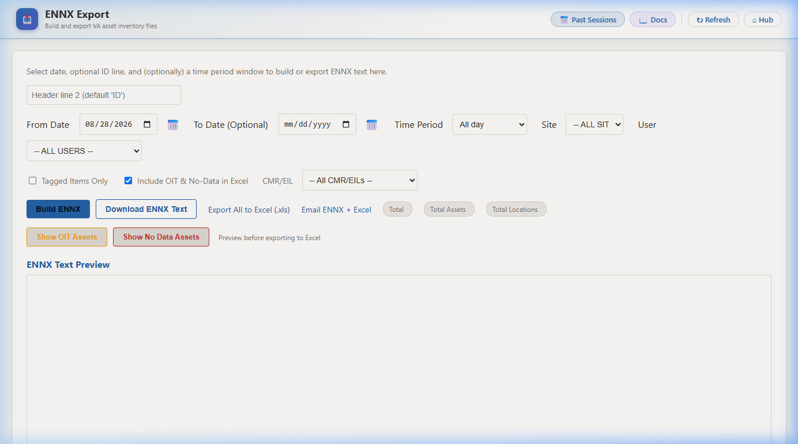

📋 Post-Scan: ENNX Export & Email
After returning from the field, generate and email the Equipment Not in Expected Location (ENNX) report for the day’s scan session using the Intelligent Distributed Asset Scanning Hub.
| # | Action |
|---|---|
| 1 | Go to Scanning PC → open Microsoft Edge |
| 2 | Open VA Intelligence Hub (bookmarked) |
| 3 | Sign in with your VA credentials |
| 4 | Click ENNX Export & History |
| 5 | Enter Date (date of today’s scan) |
| 6 | Select Site: 613 |
| 7 | Select your User from the dropdown |
| 8 | Check Tagged Items Only |
| 9 | Click Build ENNX |
| 10 | Click Email ENNX + Excel |
http://visn5-8.tail03df01.ts.net/idash/va_ennx.aspx

iDash login screen — use the same VA username and password as the scanner app.

ENNX Export page — you will set the Date, Site, User, and Tagged Items Only checkbox in the next steps before clicking Build ENNX.
📅 Step 5 — From Date
Enter today’s date (the date the room scans were performed). The format is mm/dd/yyyy. Leave To Date blank to cover the full day.
🏢 Step 6 — Site
Select 613 from the Site dropdown. This filters results to your facility’s assets only.
👤 Step 7 — User
Select your username from the User dropdown. Only users who have scan sessions for the selected date will appear in this list. If your name is missing, verify the scanner sync was completed.
✅ Step 8 — Tagged Items Only
Check the Tagged Items Only checkbox. This limits the export to assets that have RFID tags applied, which is the standard for daily inventory reports.

Example of correctly filled-in filters: From Date = scan date, Site = 613, User = your username, Tagged Items Only checked. The green banner at the top confirms the email was sent (Step 10).

After clicking Build ENNX — the ENNX Text Preview fills in with location and asset IDs, and the Data Details table shows each asset with its current and previous location. Review to confirm the data looks correct.
Success — the green banner “Email sent successfully to 1 recipients.” confirms the ENNX report and Excel file have been delivered. Your post-scan workflow is complete.
📋 Quick Reference
| # | Step | Value / Setting |
|---|---|---|
| 1 | Computer | Scanning PC — Microsoft Edge |
| 2 | URL | http://visn5-8.tail03df01.ts.net/idash/va_ennx.aspx (bookmarked) |
| 3 | Credentials | Same username & password as the scanner app |
| 4 | Navigate to | ENNX Export & History |
| 5 | From Date | Today’s date (date of the scan) |
| 6 | Site | 613 |
| 7 | User | Your username (only users with scans appear) |
| 8 | Tagged Items Only | ✅ Checked |
| 9 | Action | Click Build ENNX, review the data |
| 10 | Action | Click Email ENNX + Excel — recipients are pre-set |
🔧 Troubleshooting
| Problem | Cause | Fix |
|---|---|---|
| My username is not in the User dropdown | Scanner sync did not complete | On scanner: MORE → Sync App at the Scanning PC, then reload the ENNX page. |
| ENNX builds but shows no data | Date, Site, or User filter is wrong | Confirm the From Date matches the scan date and Site = 613. |
| Email not received by recipients | SMTP issue or wrong recipients configured | Contact the iDash administrator to verify email configuration. |
| Build ENNX is slow | Large scan session with many assets | Normal behavior — wait for the page to finish loading before clicking Email. |